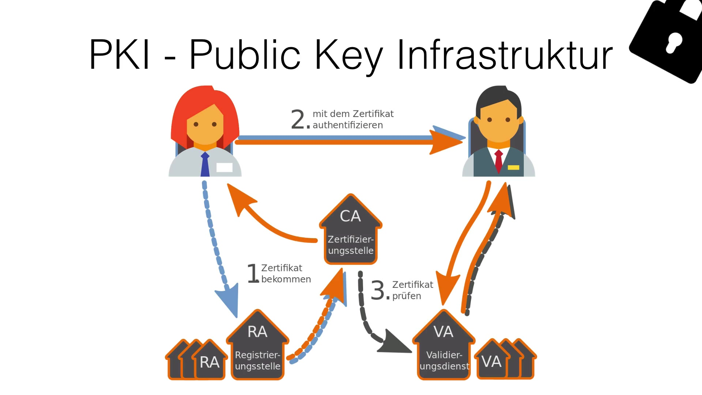
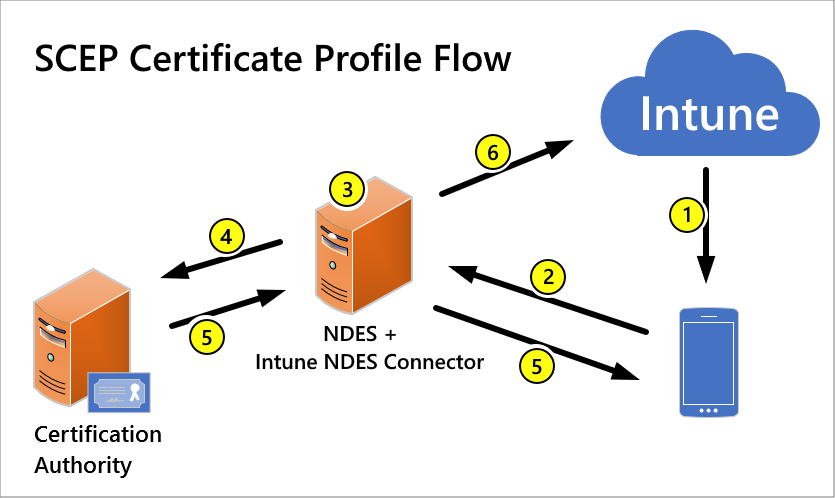

📜 Zertifikate & PKI
Wie ein öffentlicher Schlüssel vertrauenswürdig an eine Identität gebunden wird, die Vertrauenskette von Root-CA bis Endzertifikat, Ablauf & Widerruf, sowie automatisierte Zertifikatsverteilung per SCEP über Intune.
📺 Vertiefung: Public Key Infrastrukturen (PKI) Zertifikate im Detail (Eric Amberg)
Warum reicht ein Schlüsselpaar allein nicht?
i
Ein öffentlicher Schlüssel allein ist wie eine unbeschriftete
Visitenkarte: du weisst zwar, dass irgendjemand diesen Schlüssel
besitzt, aber nicht, OB die Person, die ihn dir gegeben hat,
wirklich die ist, für die sie sich ausgibt. Ein Zertifikat ist
diese Visitenkarte PLUS eine Unterschrift einer vertrauenswürdigen
Stelle, die die Identität vorher geprüft hat.
i
Im Modul Verschlüsselung hast du gelernt, dass bei asymmetrischer Verschlüsselung jede Seite ein Schlüsselpaar besitzt. Offen bleibt dabei eine entscheidende Frage: woher weiss ich, dass ein bestimmter öffentlicher Schlüssel wirklich zu der Person/dem Server gehört, die/der er vorgibt zu sein? Eine Public-Key-Infrastruktur (PKI) löst genau dieses Problem: eine Zertifizierungsstelle (Certificate Authority, CA) prüft die Identität und bürgt mit ihrer eigenen Signatur für die Bindung zwischen Identität und öffentlichem Schlüssel - das Ergebnis ist ein Zertifikat.

Was steckt in einem Zertifikat?
| Feld | Bedeutung |
|---|---|
| Subject | Für wen das Zertifikat ausgestellt wurde (z.B. eine Domain oder ein Gerät) |
| Issuer | Welche CA das Zertifikat ausgestellt/signiert hat |
| Public Key | Der öffentliche Schlüssel, dessen Zugehörigkeit bestätigt wird |
| Gültigkeit | Ausstellungs- und Ablaufdatum (Not Before / Not After) |
| Seriennummer | Eindeutige ID, u.a. für Widerruf über CRL/OCSP relevant |
| Signatur | Kryptografische Unterschrift der ausstellenden CA über alle übrigen Felder |
Die Vertrauenskette (Chain of Trust)
i
Wie ein Notar, der einen Notar-Gehilfen beauftragt, statt jede
einzelne Unterschrift selbst zu leisten: die Root-CA (der Notar)
bleibt möglichst selten aktiv/offline, während Intermediate-CAs
(die Gehilfen) das Tagesgeschäft übernehmen - fliegt ein Gehilfe
auf, wird nur er ausgetauscht, der Notar selbst bleibt
unangetastet.
i
Zertifikate bilden fast immer eine mehrstufige Hierarchie:
- Root-CA: die oberste, selbstsignierte Zertifizierungsstelle - vorab als vertrauenswürdig im Betriebssystem/Browser hinterlegt. Bleibt aus Sicherheitsgründen meist offline.
- Intermediate-CA: von der Root-CA signiert, übernimmt das tägliche Ausstellen von Zertifikaten. Bei einem Vorfall lässt sie sich isoliert widerrufen, ohne die Root-CA zu gefährden.
- Endzertifikat (Leaf/End-entity): das eigentliche Zertifikat für einen Server, ein Gerät oder eine Person, signiert von der Intermediate-CA.
Ein Client prüft die gesamte Kette rückwärts: vertraut er der Root-CA UND ist jede Signatur in der Kette gültig, vertraut er auch dem Endzertifikat - fehlt ein Glied oder ist eine Signatur ungültig, schlägt die Prüfung fehl.
Ablauf & Widerruf
Ein Zertifikat verliert seine Gültigkeit auf zwei unterschiedliche Arten:
| Ablauf (Expiry) | Widerruf (Revocation) | |
|---|---|---|
| Zeitpunkt | Geplant, im Zertifikat selbst festgelegt | Ungeplant, jederzeit möglich |
| Typischer Grund | Normale Laufzeit erreicht | Privater Schlüssel kompromittiert, Mitarbeiter ausgeschieden |
| Wie geprüft | Client vergleicht Datum lokal | Client fragt CRL oder OCSP |
CRL (Certificate Revocation List) ist eine herunterladbare Liste aller widerrufenen Zertifikate einer CA. OCSP (Online Certificate Status Protocol) fragt stattdessen in Echtzeit nur den Status EINES einzelnen Zertifikats ab - schneller und aktueller, aber es braucht eine aktive Online-Verbindung zum OCSP-Responder.
SCEP-Zertifikate über Intune verteilen
i
Ohne SCEP müsste ein Admin für jedes einzelne Gerät manuell ein
Zertifikat beantragen und installieren - bei hunderten Geräten
unrealistisch. SCEP lässt jedes Gerät sein Zertifikat
selbstständig und automatisiert anfordern, sobald es ein
entsprechendes Profil von Intune erhält.
i
SCEP (Simple Certificate Enrollment Protocol) ist ein Standardprotokoll, mit dem Geräte automatisiert Zertifikate bei einer Zertifizierungsstelle anfordern können - ideal, um ganze Geräteflotten über Intune mit Zertifikaten für WLAN-Authentifizierung (EAP-TLS), VPN oder E-Mail-Signierung auszustatten, ganz ohne manuelles Eingreifen pro Gerät.

- Intune verteilt ein SCEP-Zertifikatprofil (inkl. Vorlage, Schlüsselverwendung, Challenge-Mechanismus) an das Gerät.
- Das Gerät sendet daraufhin selbstständig eine Zertifikatsanfrage an den NDES-Server (Network Device Enrollment Service) - meist vermittelt über den Intune-NDES-Connector.
- NDES leitet die Anfrage an die interne Zertifizierungsstelle (CA) weiter.
- Die CA stellt das Zertifikat aus, NDES liefert es zurück ans Gerät.
Fast immer wird zusätzlich ein Trusted-Root-Certificate-Profil an dieselben Geräte verteilt: das Gerät muss der ausstellenden internen CA vertrauen, bevor es dem neuen Zertifikat selbst vertrauen kann - fehlt dieses Profil, bleibt das SCEP-Zertifikat für Zwecke wie WLAN-Authentifizierung nutzlos, obwohl es technisch gültig ist.
Wichtige Voraussetzung: NDES muss für cloud-verwaltete Geräte erreichbar sein (klassisch über eine im Internet exponierte NDES-URL oder eine Anwendungs-Proxy-Lösung), da die Anfrage vom Gerät aus dem Internet kommt, die CA selbst aber meist rein On-Premises betrieben wird.
🧩 Zuordnen: Begriff ↔ Bedeutung
0 / 7 Paare gefunden